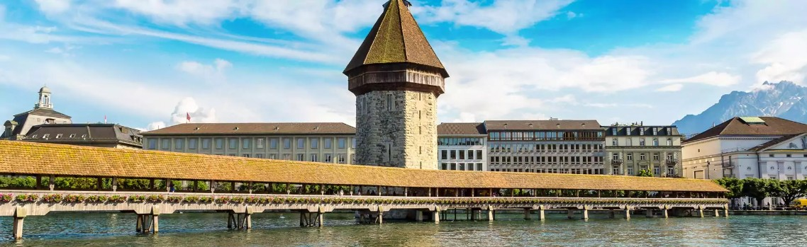
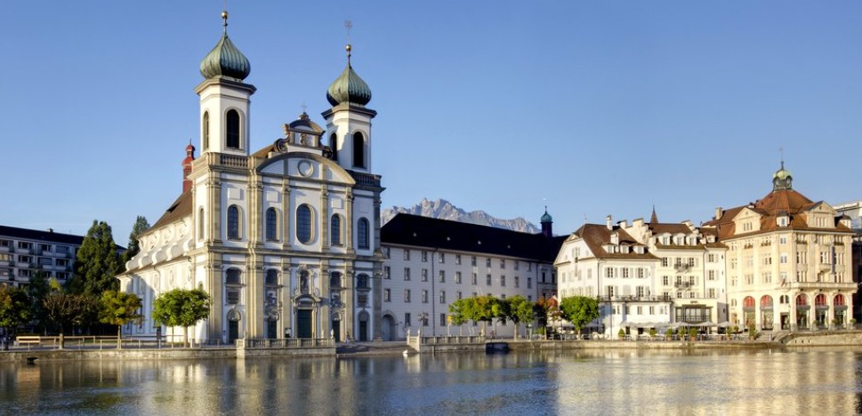
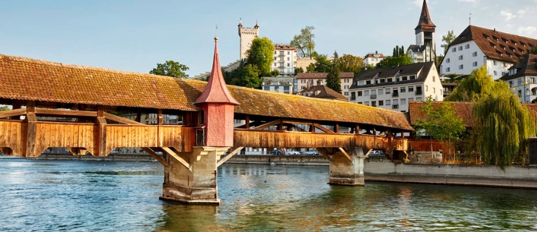
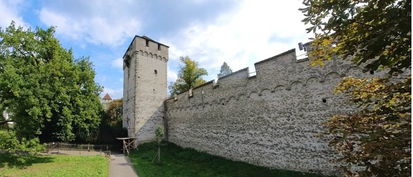
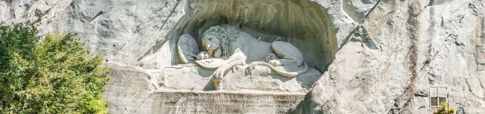

14. Luzern látogatás (sub program, gyalogos)
Ajánlott sorrend: 1 → 2 → 3 → 4 → 5 → 6 → 7
1. Motor parkoló
Logisztikai kiindulópont a gyalogos városnézéshez. Az infrastruktúra közvetlen hozzáférést biztosít a történelmi óváros gyalogos zónáihoz és a parti sétányhoz.
2. Kapellbrücke

Az 1333-ban épült Kapellbrücke Európa legrégebbi fennmaradt fedett fahídja, amely eredetileg a város erődrendszerének kulcsfontosságú elemeként funkcionált. A tetőszerkezet alatt található, 17. századi háromszögletű festmények Luzern és Svájc történelmi eseményeit dokumentálják. Bár az építmény jelentős része egy 1993-as tűzvészben megsemmisült, a hidat az eredeti tervek alapján gyorsan és precízen rekonstruálták.
3. Jesuitenkirche

A luzerni jezsuita templom Svájc első nagyszabású barokk szakrális építménye az Alpoktól északra, melynek építése 1677-ben fejeződött be. Az épület a katolikus ellenreformáció hatalmi szimbólumaként és oktatási központként is szolgált a térségben. Belső terét a stukkódíszítések és a kiváló akusztika jellemzi, amely a korabeli építészeti és mérnöki tudás magas fokát tükrözi.
4. Spreuerbrücke

Az 1408-ban emelt Spreuerbrücke a város második fennmaradt történelmi fahídja, amely a Reuss folyó malmaihoz vezetett. Nevét arról a kiváltságról kapta, hogy a városlakók kizárólag innen szórhatták a folyóba a gabona ocsúját (Spreu). A híd belső szerkezetét a 17. századból származó, Kaspar Meglinger által készített 67 táblakép díszíti, amelyek a középkori "Haláltánc" (Totentanz) motívumát dolgozzák fel.
5. Weinmarkt
A Weinmarkt Luzern történelmi magterülete, ahol 1332-ben a városlakók felesküdtek a svájci kantonok szövetségére. A tér központjában álló, 1481-ből származó késő gótikus kút a város egyik legfontosabb köztéri műemléke. A teret szegélyező patríciusházak homlokzatán található freskók a helyi céhek és a kereskedőosztály társadalmi és gazdasági dominanciáját örökítik meg.
6. Museggmauer

A Museggmauer egy kivételesen jó állapotban fennmaradt középkori védmű, amelyet az 1386-os sempachi csata után építettek a város északi határán. A 800 méter hosszú falrendszert kilenc stratégiai elhelyezkedésű őrtorony tagolja, köztük a Zytturm, amely a város legrégebbi óraszerkezetét rejti. Ez az óra a történelmi kiváltság okán egy perccel a város többi harangja előtt üti el az egész órát.
7. Löwendenkmal

Az 1820-ban felavatott emlékművet egy korábbi homokkőbánya sziklafalába faragták Bertel Thorvaldsen dán szobrász tervei alapján. A haldokló oroszlánt ábrázoló dombormű annak az 1792-es párizsi eseménynek állít emléket, amelynek során a Tuileriák palotáját védő svájci gárdistákat lemészárolták. A műalkotás a hűség és a zsoldos katonai szolgálat tragikus kettősségének történelmi szimbólumává vált.